← Back to the Tito Mella chronicle← Volver a la crónica de Tito Mella
Photo galleryGalería de fotos
These photographs come from the family page “Tito Mella: Empresario Naviero,” above all from the album published in January 2016 for the twenty-fifth anniversary of his death. The chronicle page carries a handful of them where they belong in the story; the whole set is gathered here. Each caption says what the album and the photograph itself support, and no more.
Estas fotografías provienen de la página familiar «Tito Mella: Empresario Naviero», sobre todo del álbum publicado en enero de 2016 por el vigésimo quinto aniversario de su muerte. La página de la crónica lleva un puñado de ellas donde pertenecen en la historia; el conjunto completo está reunido aquí. Cada leyenda dice lo que el álbum y la propia fotografía sostienen, y nada más.


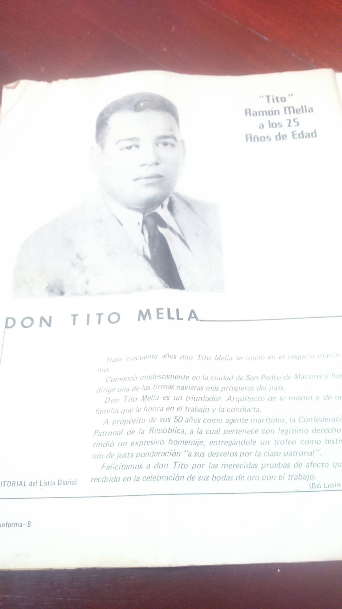

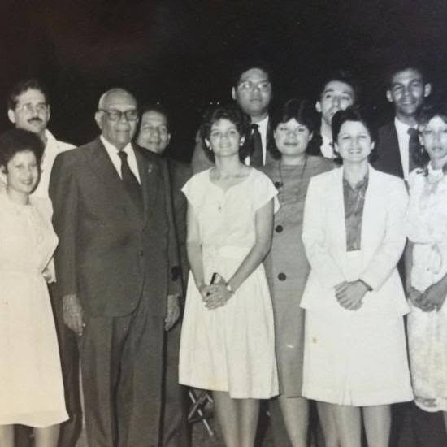

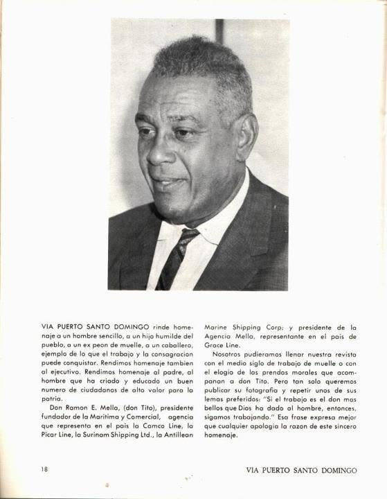


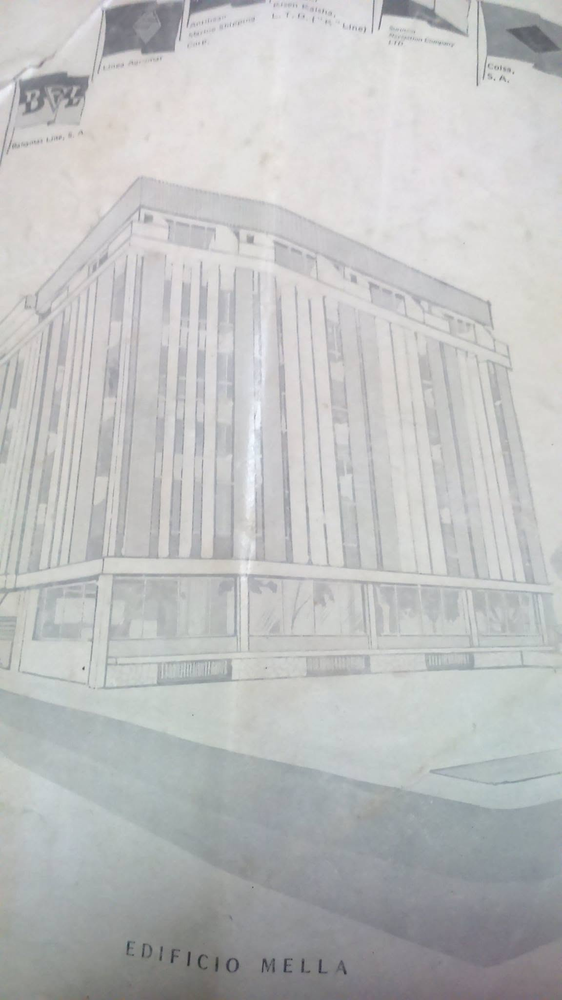

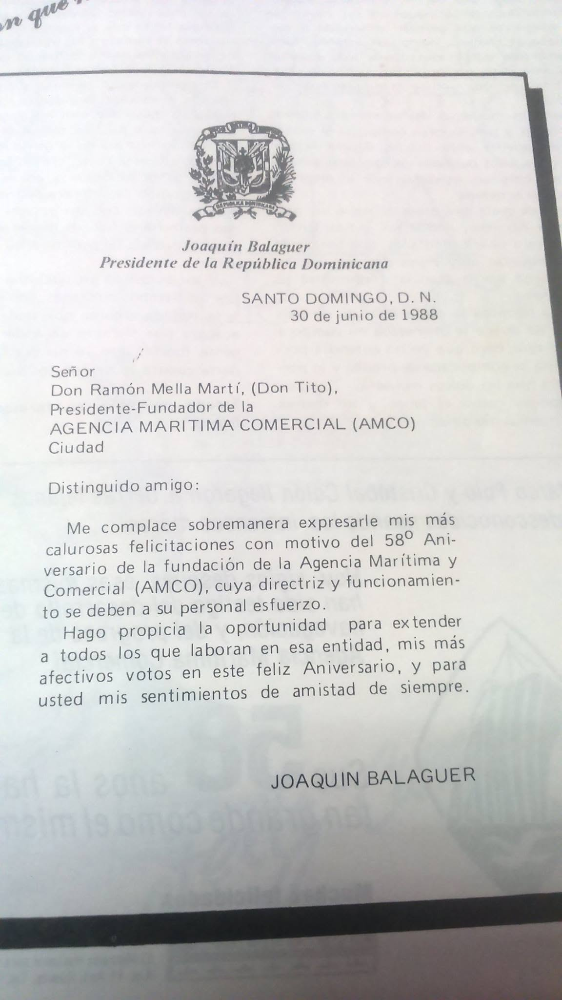

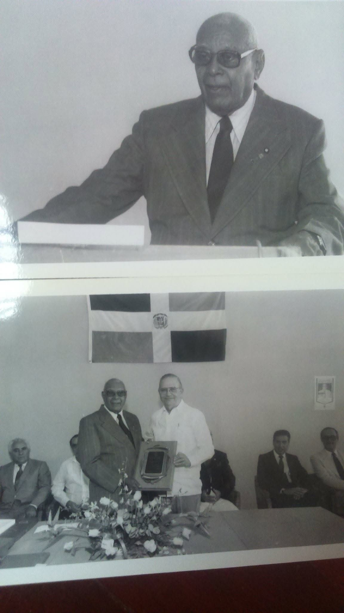


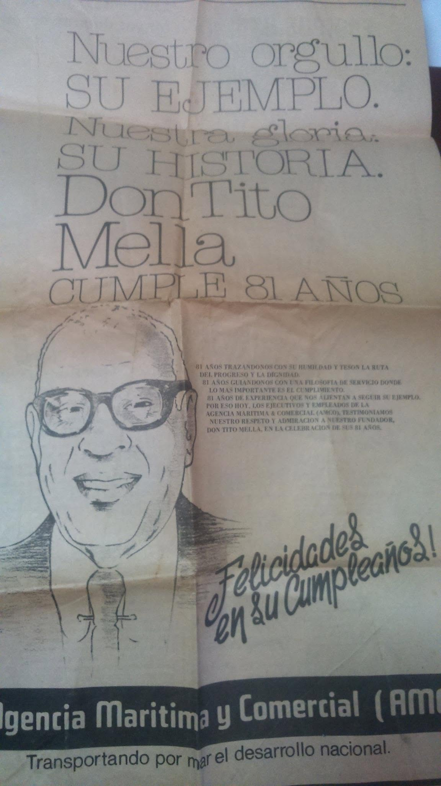

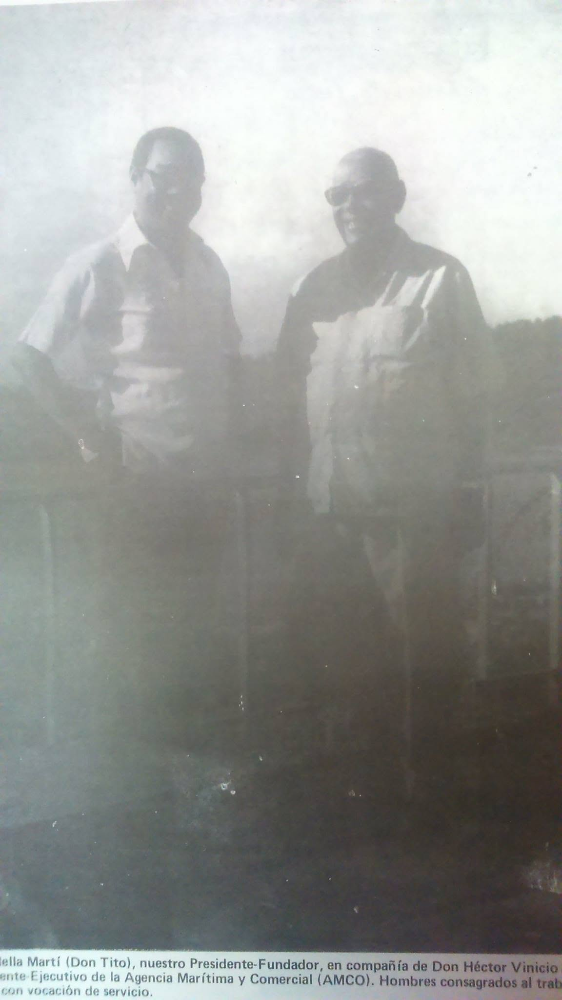

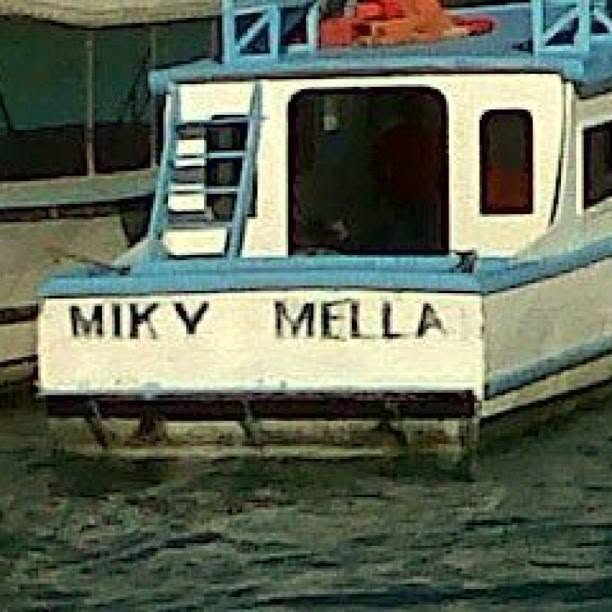

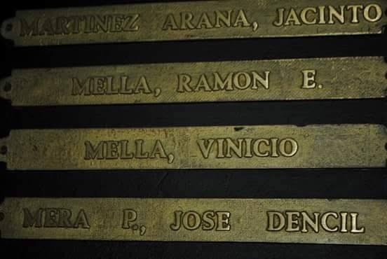

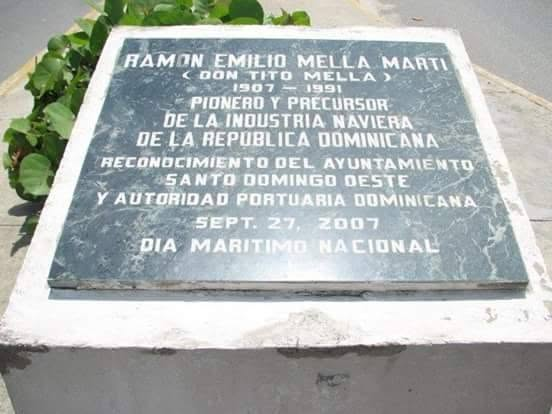
← Back to the Tito Mella chronicle← Volver a la crónica de Tito Mella